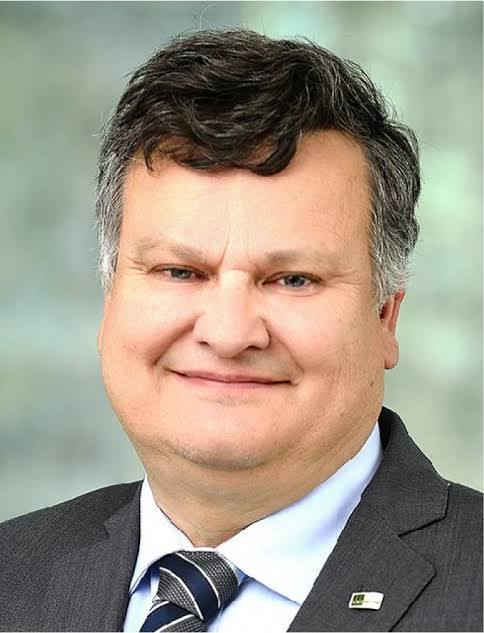
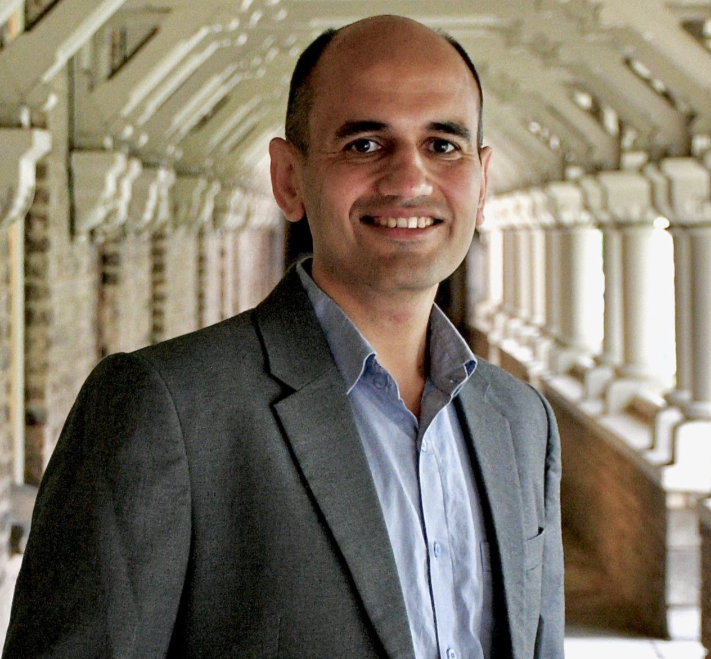

Program
Orna Kupferman Hebrew University of Jerusalem
Title: TBD
Abstract. TBD
Bio. TBD

Thomas A. Henzinger IST Austria
Title: TBD
Abstract. TBD
Bio. TBD

Kuldeep Meel University of Toronto
Title: TBD
Abstract. TBD
Bio. TBD
Program
09:10 - 10:00 | Keynote Talk 1
Speaker: TBA
Speaker: TBA
☕ 10:00 - 10:25 | Coffee Break
10:25 - 11:00 | Reactive Synthesis
10:25 - 10:42 Natural Synthesis: Outperforming Reactive Synthesis Tools with Large Reasoning Models
Abstract: TBA
10:42 - 10:59 Optimal LTLf Synthesis
Abstract: TBA
11:00 - 12:25 | Games and Synthesis - I
11:00 - 11:17 From Quasipolynomial to Data-Parallel Algorithms for Verification Games Played on Graphs
Abstract: TBA
11:17 - 11:34 Lazy and Priority-Guided Product Construction for Non-Integer Discounted-Sum Synthesis
Abstract: TBA
11:34 - 11:51 Social Welfare under Heterogeneous Time Preferences
Abstract: TBA
11:51 - 12:08 Games on Temporal Graphs
Abstract: TBA
12:08 - 12:25 Sure-almost-sure and Sure-limit-sure Window Mean Payoff in Markov Decision Processes
Abstract: TBA
🍽️ 12:25 - 13:45 | Lunch Break
13:45 - 14:35 | Keynote Talk 2
Speaker: TBA
Speaker: TBA
14:35 - 15:30 | Functional & Quantum Synthesis
14:35 - 14:52 Multiple Definitions from a Single Resolution Proof
Abstract: TBA
14:52 - 15:09 Structure Analysis in Boolean Functional Synthesis
Abstract: TBA
15:09 - 15:26 Reducing Quantum Circuit Synthesis to #SAT
Abstract: TBA
☕ 15:30 - 15:55 | Coffee Break
15:55 - 16:45 | Keynote Talk 3
Speaker: TBA
Speaker: TBA
16:45 - 17:20 | Games and Synthesis - 2
16:45 - 17:02 Maximizing Independence in Auction-Based Scheduling via Successive Refinement
Abstract: TBA
17:02 - 17:19 Resolving Nondeterminism by Chance
Abstract: TBA
17:20 - 18:00 | Program Synthesis
17:20 - 17:37 NSynC: Normalised Synthesis of Computation
Abstract: TBA
17:37 - 17:54 Liquify your Programs
Abstract: TBA